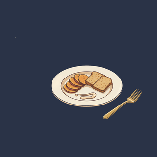
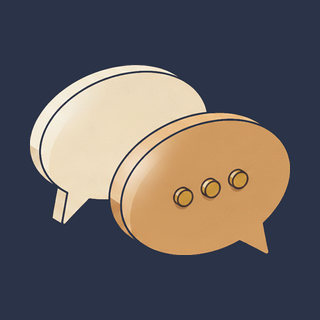

Physician-led preventive medicine, powered by AI and your own genetic, lab, and wearable data. One physician who sees the whole picture, and a plan for what matters next.
One line, from age 30 to 90. Watch what it does.
High on the curve, you do anything you want. Lower down, you start depending on other people. The same line decides whether your seventies look like hard hikes or hard stairs.
A serious event does not just cost you a bad year. It drops the whole curve and it rarely comes all the way back. Most of these are visible years before they happen, in markers a standard physical never runs.
Catch the risk early, train the right things, and the line lifts and stretches. The work is not adding empty years. It is keeping you in the part of the curve where life is still yours to run.
One line, from age 30 to 90. Watch what it does.
High on the curve, you do anything you want. Lower down, you start depending on other people. The same line decides whether your seventies look like hard hikes or hard stairs.
A serious event does not just cost you a bad year. It drops the whole curve and it rarely comes all the way back. Most of these are visible years before they happen, in markers a standard physical never runs.
Catch the risk early, train the right things, and the line lifts and stretches. The work is not adding empty years. It is keeping you in the part of the curve where life is still yours to run.
Three levers, one line. The y axis is VO2max in mL/kg/min, the best single measure of physical capability across age. Drag the sliders and watch which bands of life you keep.
A teaching tool, not a personalized prediction. Underlying risk pulls a serious event earlier and makes it more likely. The full model behind your membership runs on your own labs, genetics, and wearable data.
See how Aleron reads your curveFour streams, one picture. The signals most physicals never collect, read together instead of one number at a time.
No forty-page intake. No waiting room. Four steps from sign-up to a plan a physician stands behind.
Demographics, family history, lifestyle, and screening history, collected the way every other app on your phone does it. Then your wearable connects in two taps and starts streaming the signals your physician will actually use.

Spit in the tube, drop it in the prepaid mailer. The 163-gene Invitae panel screens for the variants that actually change a care plan: moderate-penetrance cancer risks, cardiovascular variants, and pharmacogenomic markers that change which drugs work for you.

Draw the same Elite panel two ways. Walk into your nearest Quest patient service center, or skip the trip with an at-home capillary kit that ships to your door. Either way you get a full metabolic, cardiovascular, and inflammatory workup, including the ApoB and Lp(a) markers most physicals never order.
Aleron combines labs, genetics, wearable trends, records, and physician judgment into a risk picture, domain by domain. Talk it through live on a video visit, or handle it asynchronously and message your care team whenever it suits you. The output is not a report. It is a plan for what matters next.

Aleron doesn't hand you a report and disappear. It works for you between visits, every day.
It stays on between visits, grounded in your labs, genetics, wearables, imaging, and care plan. It watches for changes and keeps your physician current.
Sleep, HRV, resting heart rate, and activity, tracked and analyzed over time. We catch the signal before you feel the symptom.
Aleron reviews labs, wearable trends, records, symptoms, goals, and new research, then updates your priorities around what actually changed in your risk.

Guidance shaped by your labs, goals, preferences, and metabolic risk, not a generic meal plan.

Help turning priorities into routines and follow-through that fit a real life.
24/7 telemedicine with a physician who already has your full picture: your data, your genetics, your history. No repeating yourself.
"The best part isn't the labs or the engine. It's getting a voice message from my doctor on a Tuesday afternoon explaining what to do next, like a friend who happens to be brilliant."
J.L. · member since 2025
Same labs. Same body. Different level of care.
Drivers overlap; the headline figure is the union, not the sum. Drawn from PREVENT (AHA 2023), CAC reclassification studies (MESA, CAC Consortium), and pharmacogenomics plus clinical-grade genetic-panel actionable yield in adult preventive populations.
Membership opens in waves, in California and Texas today.
$3,500 to $4,200 a year, all in
Real and far below the executive-health field. Advanced labs, the 163-gene panel, wearable monitoring, and unlimited physician access are all inside the membership.
We'll show you how Aleron fits alongside your existing benefits.